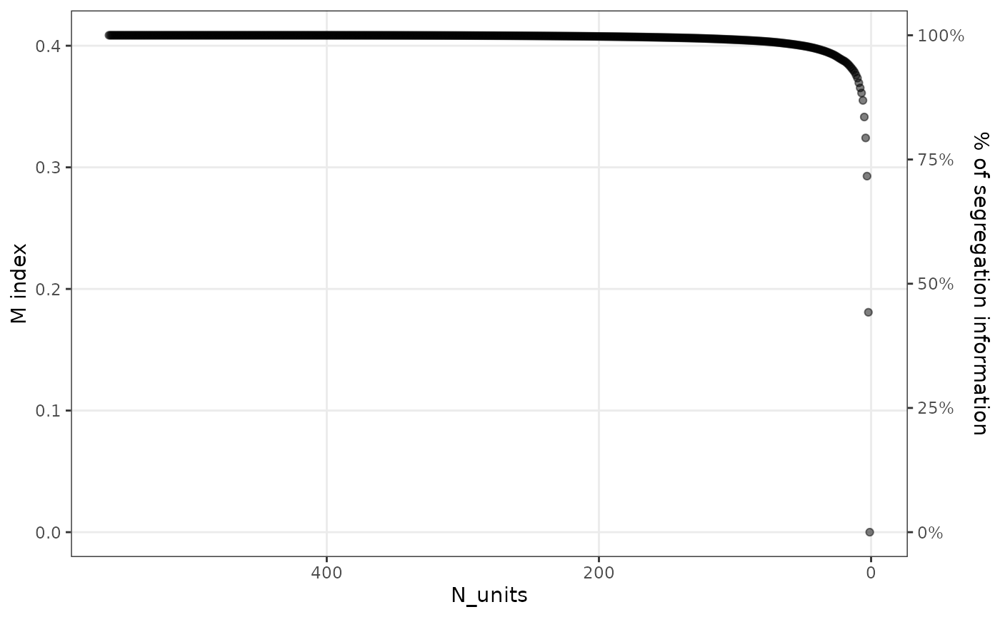

The package provides the functions segcurve() and segplot() to visualize segregation. These functions return simple ggplots, which can then be further styled and themed. For the segplot() function, it is often interesting to also compress the segregation information that is contained in large datasets. How to do this using the functions compress() and merge_units() is also described below, and in more detail in this working paper.
Segregation curve
The segregation curve was first introduced by Duncan and Duncan (1955). The function segcurve() provides a simple way of plotting a segregation curve:

Segplot
The function segplot() is provided to generate segplots. Segplots are described in more detail in this working paper. The function requires the dataset, the group, and unit variables, and, if required, a variable that identifies the weight (n in this case).
Other options to customize the look of the segplot are given by the argument order. By default, the units of the segplot are ordered by their local segregation score, but it is also possible to order them by entropy (i.e., diversity) or by share of the majority population. This last option can be useful for the two-group case. The argument bar_space can be used to increase the space between the units from the default of zero space between bars. When plotting a subset of the dataset, the reference distribution shown on the right of the segplot can be changed by supplying a two-column data frame to the reference_distribution argument. One column of this frame should contain the group identifiers, and the other should include the reference proportion of each group. To show axis labels either on the left side only, the right side only, or on both sides, use the argument axis_labels.
Examples of how to use these arguments are given below:
sch <- subset(schools00, state == "A")
# basic segplot
segplot(sch, "race", "school", weight = "n", axis_labels = "both")
# order by majority group (white in this case)
segplot(sch, "race", "school", weight = "n", order = "majority")
# increase the space between bars
# (has to be very low here because there are many schools in this dataset)
segplot(sch, "race", "school", weight = "n", bar_space = 0.0005)
# change the reference distribution
# (here, we just use an equalized distribution across the five groups)
(ref <- data.frame(race = unique(schools00$race), p = rep(0.2, 5)))## race p
## 1 asian 0.2
## 2 black 0.2
## 3 hisp 0.2
## 4 white 0.2
## 5 native 0.2
segplot(sch, "race", "school",
weight = "n",
reference_distribution = ref
)Compressing segregation information
The compression algorithm requires three steps to be taken. First, it is important to decide which units should be permitted to merge: for residential segregation, we may only want to allow neighboring units (such as tracts) to be mergeable. In this case, the first step consists of compiling a data frame with exactly two columns, where each row identifies a pair of neighboring units. In other cases, we may want to allow all units to be mergeable, in principle. However, this can be very time-consuming as it requires each unit to be compared to all others at every step of the merging operation. To speed up compression, we therefore implement an option that allows units to be merged only within a window of “neighboring” units, where the definition of each window is based on similarities in local segregation. Hence, for a given unit, only n_neighbors are considered at every step, and these neighbors are based on similarities in local segregation. Smaller n_neighbors values will result in faster run times, but increase the probability of non-optimal merges. The method of merging can be specified in the compress() function by supplying the argument neighbors.
The second step is then to run the actual compression algorithm using compress(). For this example, we choose to compress based on a relatively small window:
# compression based on window of 20 'neighboring' units
# in terms of local segregation (alternatively, neighbors can be a data frame)
comp <- compress(sch, "race", "school",
weight = "n", neighbors = "local", n_neighbors = 20
)After running compress()—which can take some time depending on how many neighbors need to be considered—the output summarizes the compression that can be achieved:
comp## Compression of dataset with 560 units
## Original M: 0.4085965; Final M: 0
## - Threshold 99%: M = 0.4045489; Units = 98
## - Threshold 95%: M = 0.3886079; Units = 24
## - Threshold 90%: M = 0.3696806; Units = 10The results indicate that 99% of the segregation information can be retained by only 98 units (out of 560 in the original dataset), 95% in only 24 units, and 90% in 10 units. The percentage of information retained on each iteration can be accessed via the data frame available through comp$iterations. This data frame can also be used to generate a plot that shows the relationship between the number of merges and the loss in segregation information:
scree_plot(comp)
The third step is to create a new dataset based on the desired level of compression. This can be achieved using the function merge_units(), and either n_units or percent can be specified to indicate the desired level of compression.
sch_compressed <- merge_units(comp, n_units = 15)
# or, for instance: merge_units(comp, percent = 0.80)
head(sch_compressed)## school race n
## 1: M14 asian 394
## 2: M14 black 5742
## 3: M14 hisp 880
## 4: M14 white 31256
## 5: M14 native 218
## 6: M15 asian 2The compressed dataset has the same format as the original dataset and can now be used to produce another segplot, e.g.
segplot(sch_compressed, "race", "school", weight = "n")